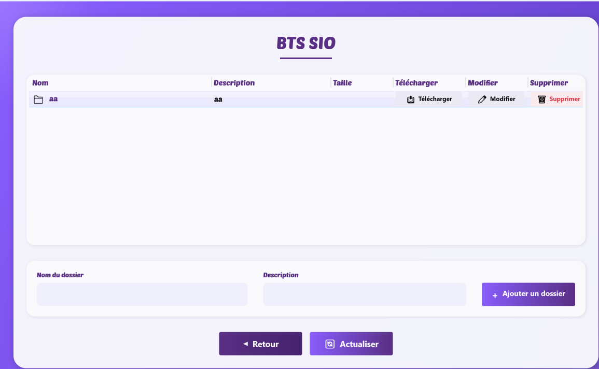

Projet Drive
Drive est une application de type mini-cloud développée en C# avec WPF, permettant de stocker, organiser et partager des fichiers de façon simple et intuitive. Ce projet m'a permis de mettre en pratique la programmation orientée objet, la gestion des fichiers, ainsi que la création d'une interface utilisateur moderne.
Fonctionnalités principales
- Authentification sécurisée (inscription, connexion)
- Création d'espaces, de dossiers et ajout de documents
- Tableau de bord avec statistiques (espaces, fichiers, favoris)
- Gestion des fichiers : ajout, modification, suppression, téléchargement
- Interface ergonomique et responsive
Captures d'écran
Page de connexion : authentification et inscription
Tableau de bord : aperçu des espaces, fichiers et favoris

Gestion d'un espace : dossiers, fichiers, actions (télécharger, modifier, supprimer)
Compétences mobilisées
- Programmation orientée objet en C#
- Développement d'interfaces avec WPF
- Gestion de fichiers et de dossiers
- Expérience utilisateur (UX/UI)
Bilan
Ce projet m'a permis de progresser en C#, de découvrir le développement d'applications desktop modernes et de mieux comprendre les enjeux de la gestion de fichiers et de la sécurité des données. Il constitue une base solide pour de futurs projets plus complexes.